自動縮放 (zoom)
縮放是 GIS 操作過程中常會進行的一個動作。 QGIS 中提供的縮放有好幾種。
縮放至一個圖層
對目標圖層點右鍵，選 Zoom to Layer：
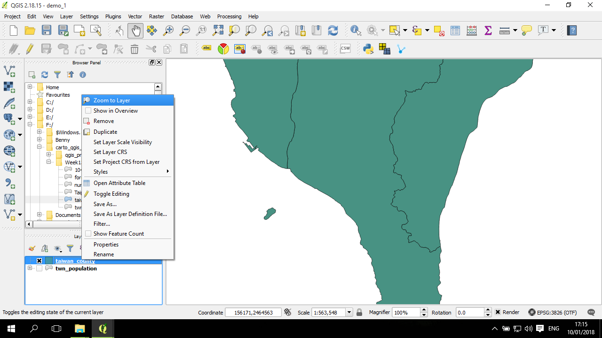
會跳到涵蓋這個圖層的範圍：
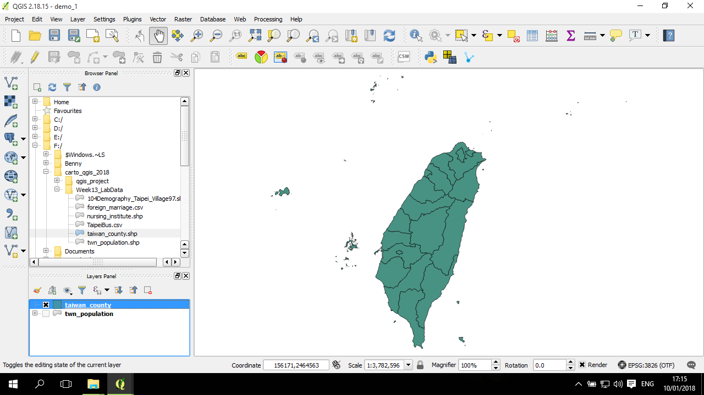
縮放至所有圖層
在一個較小或較大範圍的範圍下，點上方的一個放大鏡 (Zoom Full)：
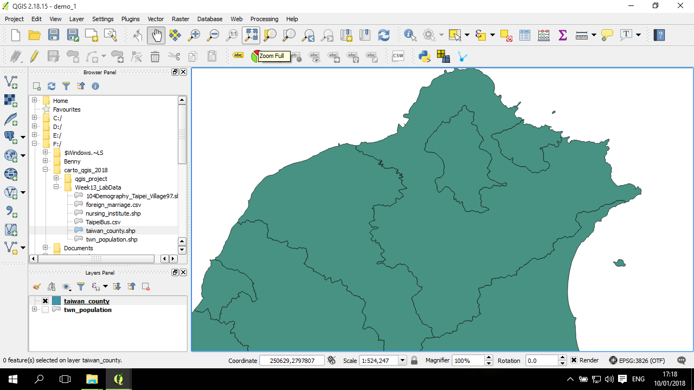
會縮放到目前所有圖層都可以被看到的範圍：
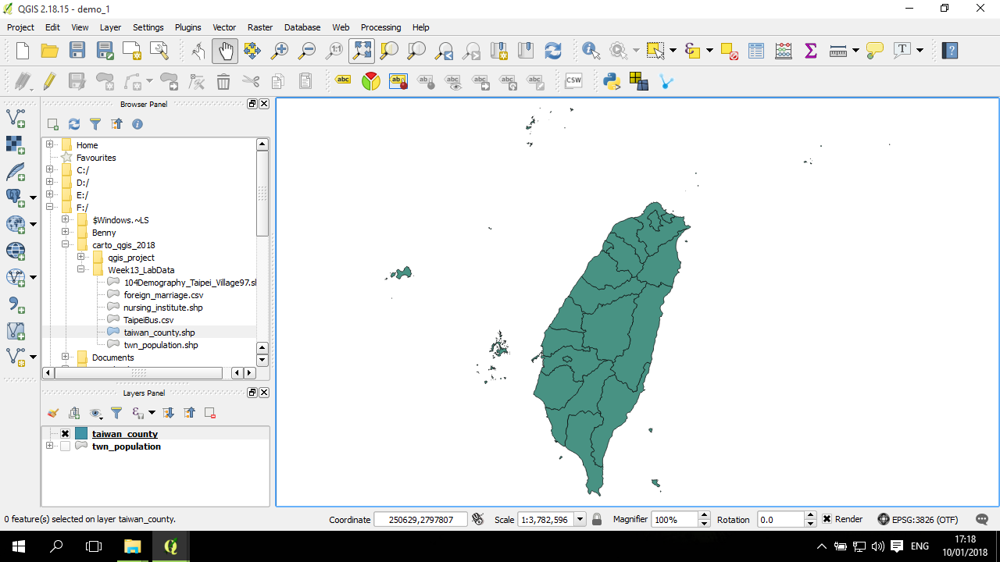
縮放至一個或一些空間物件
打開屬性表，選到所要縮放的空間物件，例如選到澎湖縣，然後點屬性變視窗上方的放大鏡按鈕 (Zoom map to selected rows)：
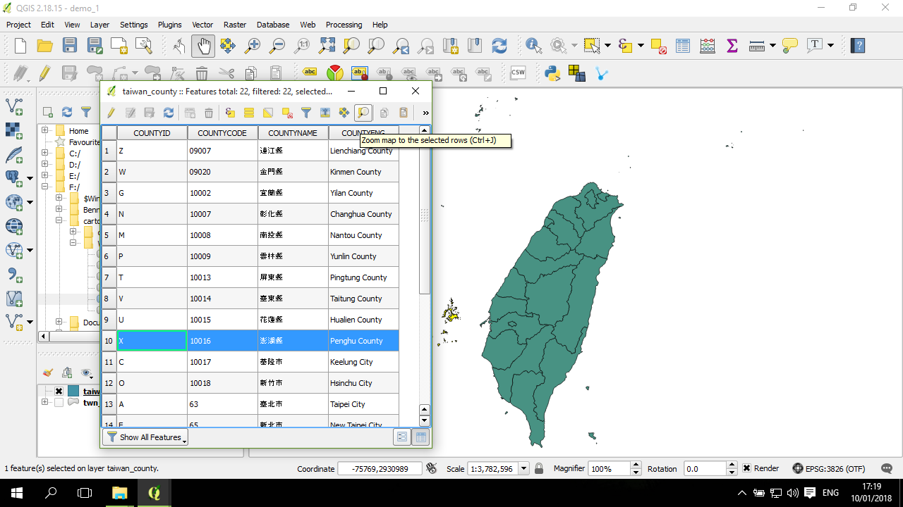
會縮放到所選取的空間物件 -- 澎湖縣：
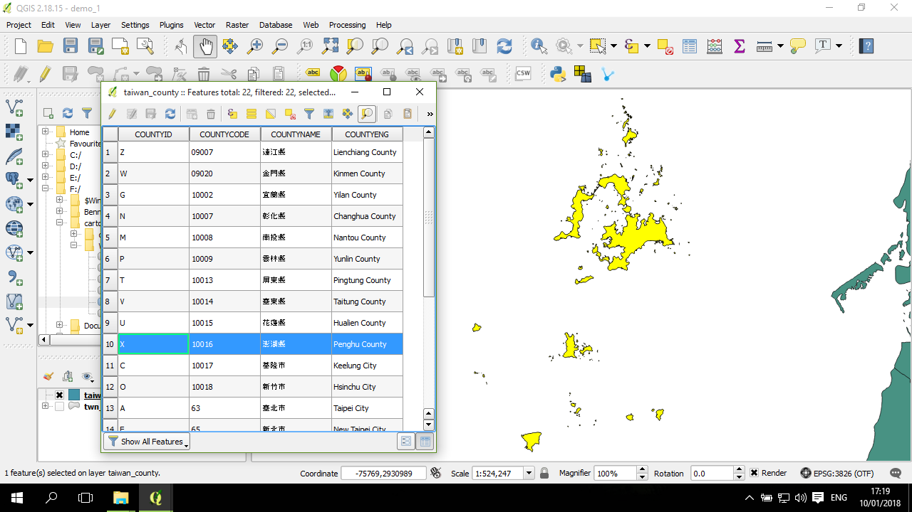
另一種做法是不縮放，在現在的這個縮放尺度下，平移到另一個空間物件 (Pan map to selected rows)：
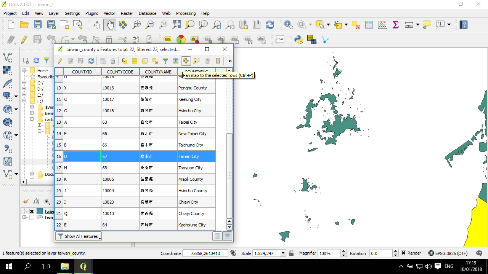
則移動到目標空間物件 -- 臺南市：
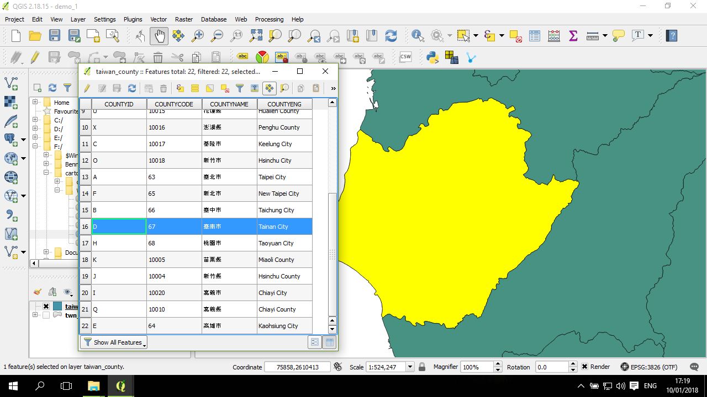
放大選取區域
點有一個加號(+)的放大鏡 (Zoom In)：
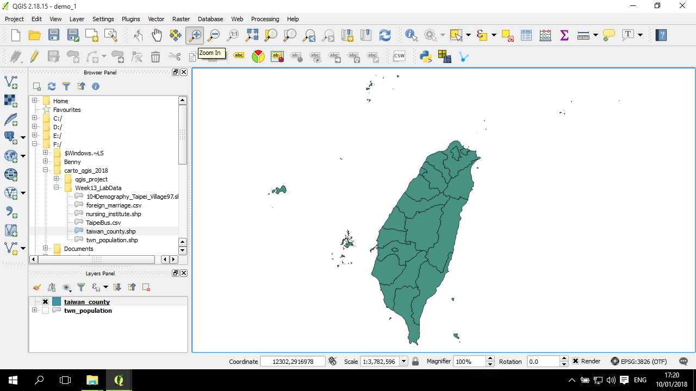
在地圖上選取一個範圍：
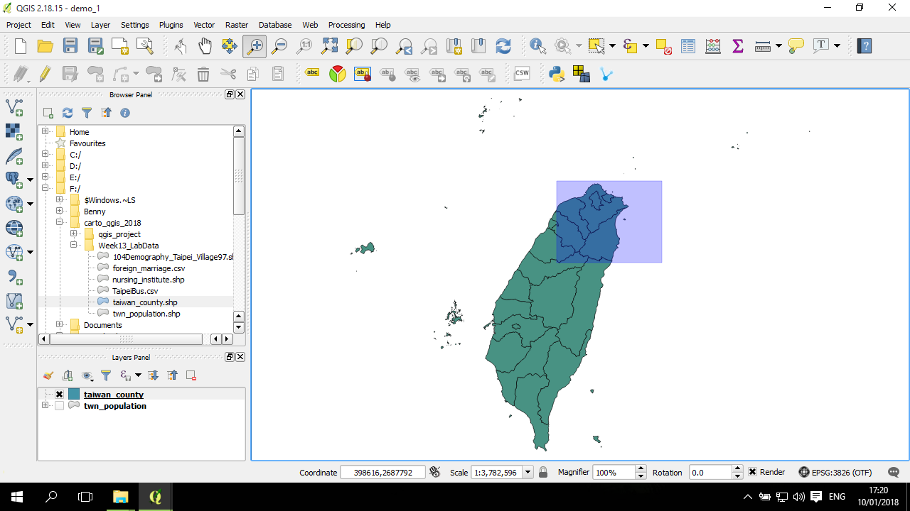
地圖會縮放到那個區域：
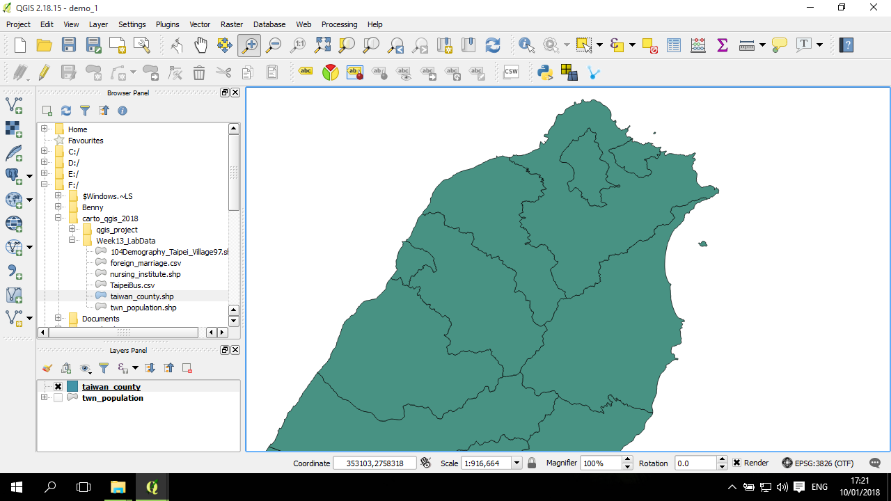
再試一次，選取臺北市：
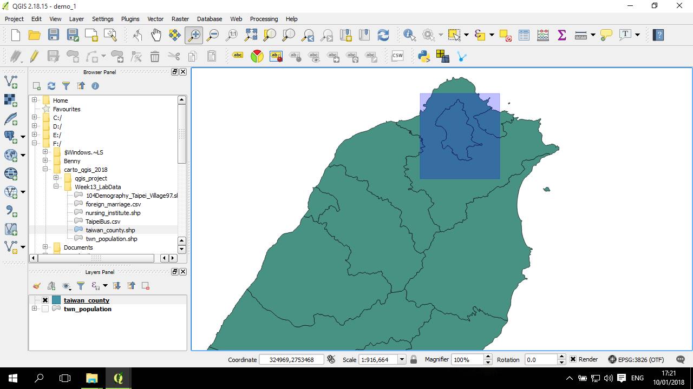
縮放到臺北市：
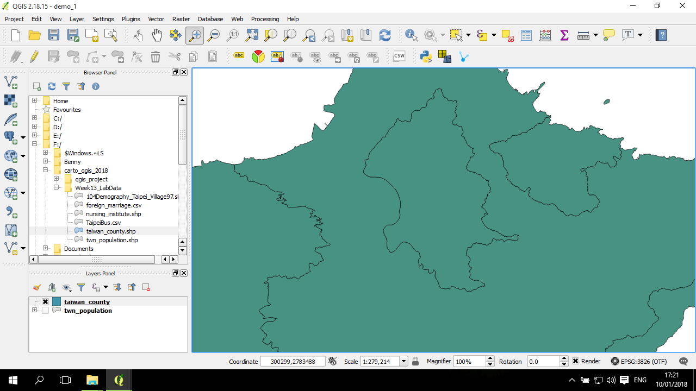